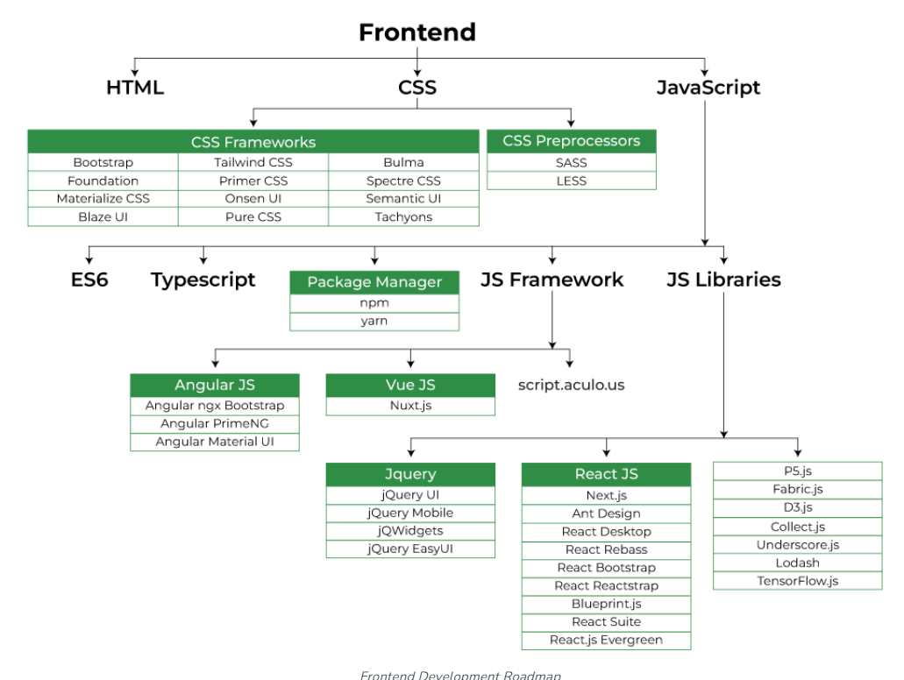
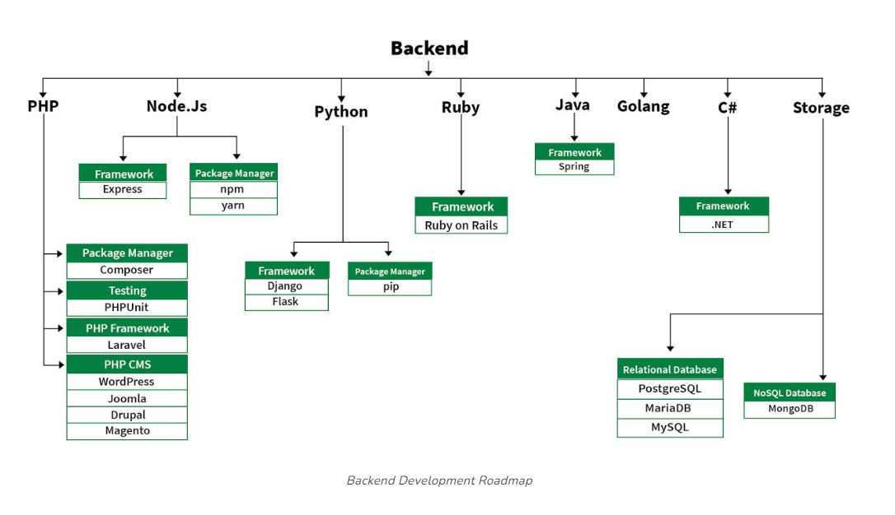

What is Web development?
Web development refers to the creating, building, and maintaining of websites. It includes aspects such as web design, web publishing, web programming, and database management. It is the creation of an application that works over the internet i.e. websites.
Web development can be classified into 2 ways:
1.Frontend development
2.Backend development Frontend Development
The part of a website where the user interacts directly is termed as front end. It is also referred to as the 'client side' of the application.
 Popular frontend technologies:
1. HTML: HTML stands for HyperText Markup Language. It is used to design the front end portion of web pages using markup language. It acts as a skeleton for a website since it is used to make the structure of a website.
2. CSS: Cascading Style Sheets fondly referred to as CSS is a simply designed language intended to simplify the process of making web pages presentable. It is used to style our website.
3. Javascript: JavaScript is a scripting language used to provide a dynamic behavior to our website.
4. Bootstrap: Bootstrap is a free and open-source tool collection for creating responsive websites and web applications. It is the most popular CSS framework for developing responsive, mobile-first websites. Nowadays, the websites are perfect for all browsers (IE, Firefox, and Chrome) and for all sizes of screens (Desktop, Tablets, Phablets, and Phones). Backend Development
Backend is the server side of a website. It is part of the website that users cannot see and interact with. It is the portion of software that does not come in direct contact with the users. It is used to store and arrange data.
 Popular backend technologies:
1. PHP: PHP is a server-side scripting language designed specifically for web development.
2. Java: Java is one of the most popular and widely used programming languages. It is highly scalable.
3. Python: Python is a programming language that lets you work quickly and integrate systems more efficiently.
4. Node.js: Node.js is an open source and cross-platform runtime environment for executing JavaScript code outside a browser. What Is a Full-Stack Developer?
A Full-Stack Developer is someone familiar with both front- and back-end development. Full Stack Developers usually understand a wide variety of programming languages and because of their versatility, they might be given more of a leadership role on projects than developers who specialize. They are generalists, adept at wearing both hats, and familiar with every layer of development. Obviously, employers want to hire Full-Stack Developers – according to an Indeed study, they are the fourth-most in-demand job in tech. Working with Databases
Databases are critical in back end development. You'll need to know how to manage and access data to grow as a back end developer.
Structured Query Language (SQL) is a query language popular among data scientists and back end developers. It's used to create databases, add new data into existing databases and modify data within databases. SQL allows developers to query data from relational databases -- databases where data is organized into tables. MySQL and Microsoft SQL Server are a few widely used options.
You'll also need to know about working with NoSQL databases. These databases don't structure their data in tables, columns and rows. Rather, these databases are agile, flexible and straightforward. They're a great option for a business that works with massive amounts of data that can't be efficiently organized within a conventional table.